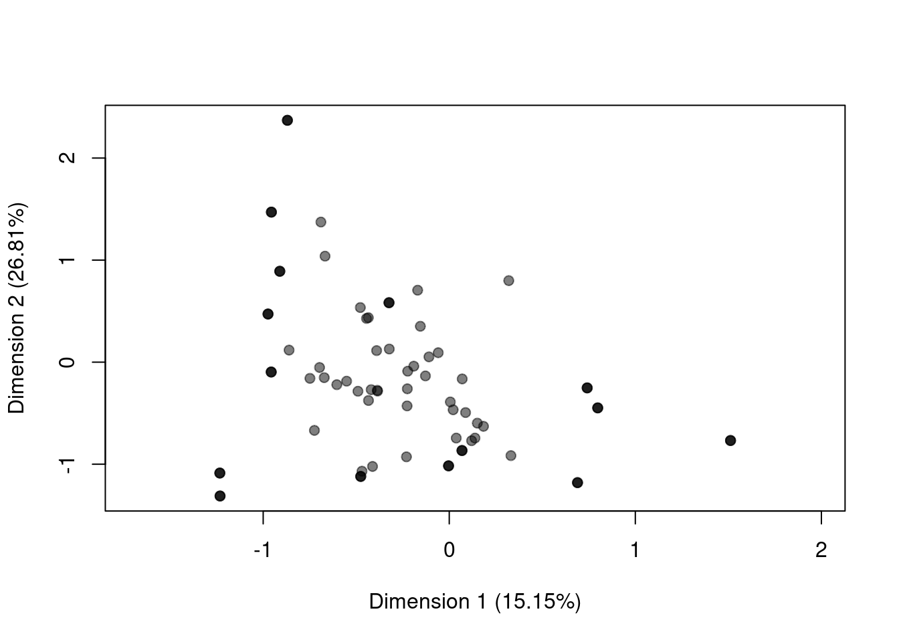
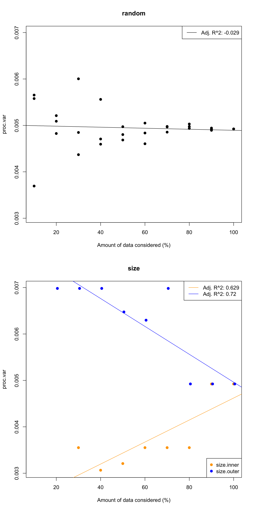
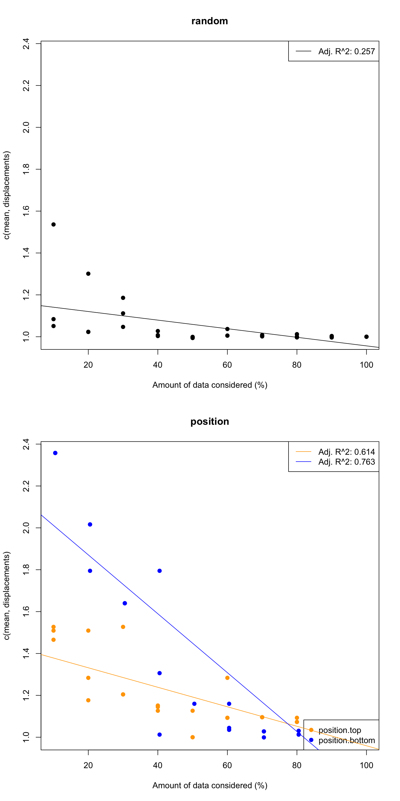
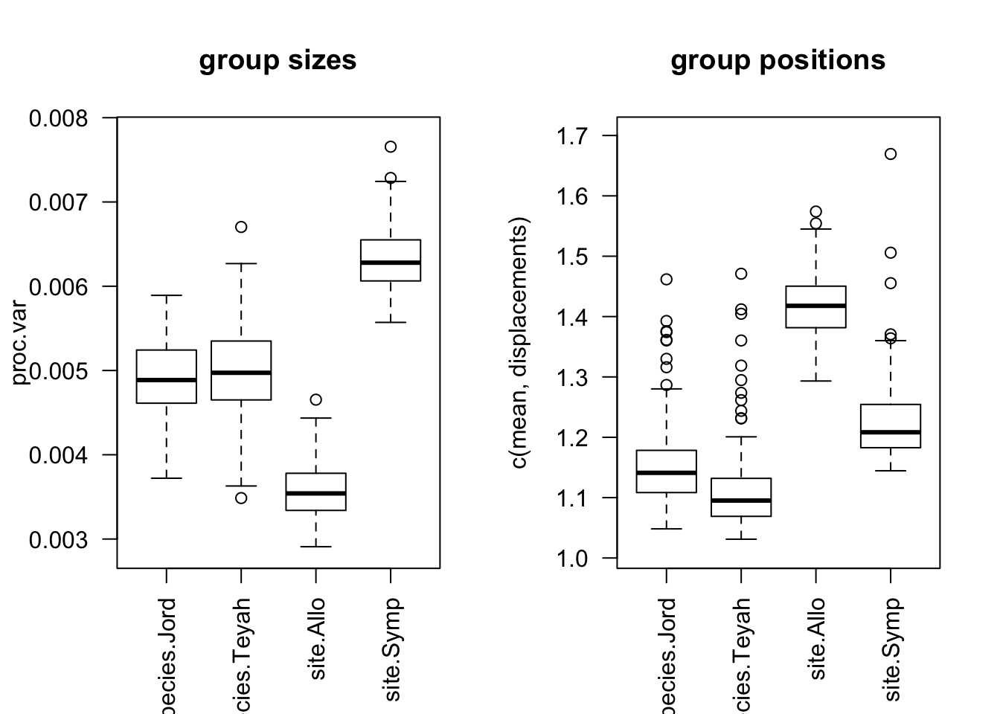

10 Morphometric geometric demo: a between group analysis
This demo aims to give quick overview of the dispRity package (v.1.6) for palaeobiology analyses of disparity, including disparity through time analyses.
This demo showcases a typical between groups geometric morphometric analysis: we are going to test whether the disparity in two species of salamander (plethodons!) are different and in which ways they are different.
10.1 Before starting
Here we are going to use the geomorph plethodon dataset that is a set of 12 2D landmark coordinates for 40 specimens from two species of salamanders.
This section will really quickly cover how to make a Procrustes sumperimposition analysis and create a geomorph data.frame to have data ready for the dispRity package.
## Loading geomorph
library(geomorph)
## Loading the plethodon dataset
data(plethodon)
## Running a simple Procrustes superimposition
gpa_plethodon <- gpagen(plethodon$land)##
|
| | 0%
|
|============== | 20%
|
|============================ | 40%
|
|======================================================================| 100%## Making a geomorph data frame object with the species and sites attributes
gdf_plethodon <- geomorph.data.frame(gpa_plethodon,
species = plethodon$species,
site = plethodon$site)You can of course use your very own landmark coordinates dataset (though you will have to do some modifications in the scripts that will come below - they will be easy though!).
## You can replace the gdf_plethodon by your own geomorph data frame!
my_geomorph_data <- gdf_plethodon10.1.1 The morphospace
The first step of every disparity analysis is to define your morphospace.
Note that this is actually not true at all and kept as a erroneous sentence: the first step of your disparity analysis should be to define your question!
Our question here will be: is there a difference in disparity between the different species of salamanders and between the different sites (allopatric and sympatric)?
OK, now we can go to the second step of every disparity analysis: defining the morphospace.
Here we will define it with the ordination of all possible Procrustes superimposed plethodon landmark coordinates.
You can do this directly in dispRity using the geomorph.ordination function that can input a geomorph data frame:
This automatically generates a dispRity object with the information of each groups. You can find more information about dispRity objects here but basically it summarises the content of your object without spamming your R console and is associated with many utility functions like summary or plot. For example here you can quickly visualise the two first dimensions of your space using the plot function:
## ---- dispRity object ----
## 4 customised subsets for 40 elements in one matrix:
## species.Jord, species.Teyah, site.Allo, site.Symp.
The dispRity package function comes with a lot of documentation of examples so don’t hesitate to type plot.dispRity to check more plotting options.
10.2 Calculating disparity
Now that we have our morphospace, we can think about what we want to measure. Two aspects of disparity that would be interesting for our question (is there a difference in disparity between the different species of salamanders and between the different sites?) would be the differences in size in the morphospace (do both groups occupy the same amount of morphospace) and position in the morphospace (do the do groups occupy the same position in the morphospace?).
To choose which metric would cover best these two aspects, please check the Thomas Guillerme, Puttick, et al. (2020) paper and associated app. Here we are going to use the procrustes variance (geomorph::morphol.disparity) for measuring the size of the trait space and the average displacements (Thomas Guillerme, Puttick, et al. 2020) for the position in the trait space.
## Defining a the procrustes variance metric
## (as in geomorph::morphol.disparity)
proc.var <- function(matrix) {sum(matrix^2)/nrow(matrix)}
## The size metric
test_size <- test.metric(morphospace, metric = proc.var,
shifts = c("random", "size"))
plot(test_size)
## 10% 20% 30% 40% 50% 60% 70% 80% 90% 100% slope
## random 0.01 0.01 0.00 0.00 0.00 0.00 0.00 0 0 0 -1.118941e-06
## size.inner NA NA 0.00 0.00 0.00 0.00 0.00 0 0 0 2.372016e-05
## size.outer NA 0.01 0.01 0.01 0.01 0.01 0.01 0 0 0 -3.003051e-05
## p_value R^2(adj)
## random 6.743408e-01 -0.02908684
## size.inner 2.275776e-06 0.62938871
## size.outer 1.385063e-08 0.71980023## The position metric
test_position <- test.metric(morphospace, metric = c(mean, displacements),
shifts = c("random", "position"))
plot(test_position)
## 10% 20% 30% 40% 50% 60% 70% 80% 90% 100% slope
## random 1.08 1.02 1.11 1.01 1.00 1.01 1.00 1.00 1.00 1 -0.002053952
## position.top 1.51 1.28 1.20 1.14 1.00 1.09 1.10 1.07 1.04 1 -0.004658626
## position.bottom 2.36 2.02 1.64 1.31 1.16 1.04 1.03 1.01 1.01 1 -0.014065613
## p_value R^2(adj)
## random 2.495483e-03 0.2570989
## position.top 1.817501e-07 0.6144292
## position.bottom 7.818485e-10 0.7633148You can see here for more details on the test.metric function but basically these graphs are showing that there is a relation between changes in size and in position for each metric.
Note that there are some caveats here but the selection of the metric is just for the sake of the example!
Note also the format of defining the disparity metrics here using metric = c(mean, displacements) or metric = proc.var. This is a core bit of the dispRity package were you can define your own metric as a function or a set of functions. You can find more info about this in the dispRity metric section but in brief, the dispRity package considers metrics by their “dimensions” level which corresponds to what they output. For example, the function mean is a dimension level 1 function because no matter the input it outputs a single value (the mean), displacements on the other hand is a dimension level 2 function because it will output the ratio between the distance from the centroid and from the centre of the trait space for each row in a matrix (an example of a dimensions level 3 would be the function var that outputs a matrix).
The dispRity package always automatically sorts the dimensions levels: it will always run dimensions level 3 > dimensions level 2 > and dimensions level 1. In this case both c(mean, displacements) and c(mean, displacements) will result in actually running mean(displacements(matrix)).
Alternatively you can define your metric prior to the disparity analysis like we did for the proc.var function.
Anyways, we can measure disparity using these two metrics on all the groups as follows:
## Bootstrapped disparity
disparity_size <- dispRity(boot.matrix(morphospace), metric = proc.var)
disparity_position <- dispRity(boot.matrix(morphospace), metric = c(mean, displacements))Note that here we use the boot.matrix function for quickly bootstrapping the matrix.
This is not an essential step in this kind of analysis but it allows to “reduce” the effect of outliers and create a distribution of disparity measures (rather than single point estimates).
10.3 Analyse the results
We can visualise the results using the plot function on the resulting disparity objects (or summarising them using summary):
## Plotting the results
par(mfrow = c(1,2))
plot(disparity_size, main = "group sizes", las = 2, xlab = "")
plot(disparity_position, main = "group positions", las = 2, xlab = "")
## subsets n obs bs.median 2.5% 25% 75% 97.5%
## 1 species.Jord 20 0.005 0.005 0.004 0.005 0.005 0.006
## 2 species.Teyah 20 0.005 0.005 0.004 0.005 0.005 0.006
## 3 site.Allo 20 0.004 0.004 0.003 0.003 0.004 0.004
## 4 site.Symp 20 0.006 0.006 0.006 0.006 0.007 0.007## subsets n obs bs.median 2.5% 25% 75% 97.5%
## 1 species.Jord 20 1.096 1.141 1.060 1.108 1.178 1.375
## 2 species.Teyah 20 1.070 1.095 1.042 1.069 1.132 1.384
## 3 site.Allo 20 1.377 1.418 1.312 1.383 1.450 1.534
## 4 site.Symp 20 1.168 1.208 1.156 1.183 1.253 1.415Just from looking at the data, we can guess that there is not much difference in terms of morphospace occupancy and position for the species but there is on for the sites (allopatric or sympatric).
We can test it using a simple non-parametric mean difference test (e.g. wilcox.test) using the dispRity package.
## Testing the differences
test.dispRity(disparity_size, test = wilcox.test, correction = "bonferroni")
test.dispRity(disparity_position, test = wilcox.test, correction = "bonferroni")So by applying the tests we see a difference in terms of position between each groups and differences in size between groups but between the species.
References
Guillerme, Thomas, Mark N Puttick, Ariel E Marcy, and Vera Weisbecker. 2020. “Shifting Spaces: Which Disparity or Dissimilarity Measurement Best Summarize Occupancy in Multidimensional Spaces?” Ecology and Evolution. Wiley Online Library.